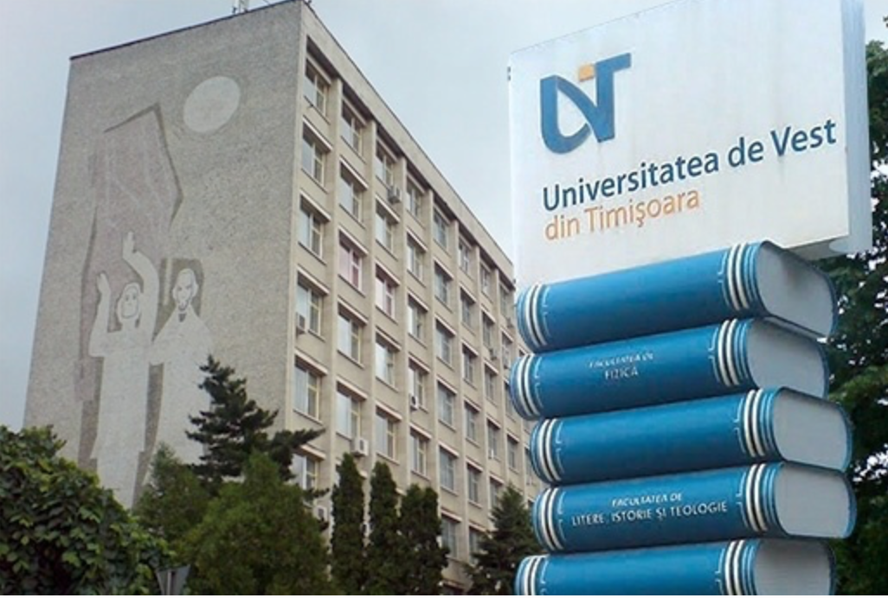
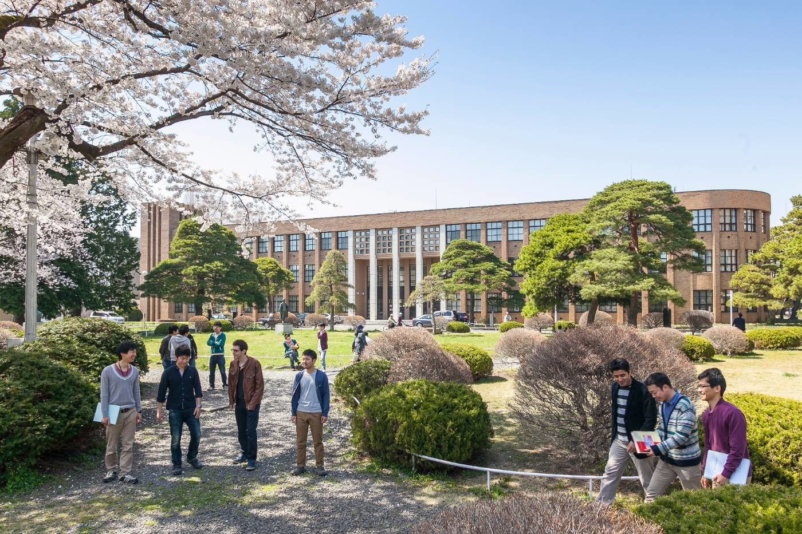

Les étudiants qui le souhaitent ont la possibilité d’effectuer un semestre d’études au cours de leur deuxième année de DUT ou au cours de leur année de licence professionnelle.
Pour cela, les étudiants doivent poser leur candidature au cours l’année qui précède leur départ.
Plus d’infos sur les modalités.
Les établissements partenaires de l’IUT
UQAC = Université du Québec à Chicoutimi – convention bilatérale
L’UQAC accueille les étudiants pour un semestre, en remplacement d’un semestre effectué à l’IUT. Chaque étudiant candidat doit choisir
un ensemble de 5 cours qu’il suivra sur place. La validation du semestre à Chicoutimi permet de valider le semestre équivalent de l’IUT.
- Public : étudiants de tous les départements de l’IUT en DUT2 – semestre 4
- nombre d’étudiants : 3 places, possibilité de places supplémentaires selon les années
- langue d’enseignement : le français
- période de mobilité : début janvier à fin avril
Site web de l’Université du Québec à Chicoutimi
CREPUQ-BCI = Conférence des Recteurs Et Principaux des Universités du Québec
La CREPUQ regroupe les Universités du Québec, pour l’essentiel francophones,
mais aussi une université anglophone.
Un étudiant qui souhaite effectuer un semestre de formation dans l’une
des Universités du programme CREPUQ-BCI doit déposer
un dossier de candidature en fonction d’une procédure spécifique auprès du Service des Relations
Internationales de l’Université d’Artois au cours de l’année qui précède son départ.
Après accord de l’IUT, le dossier est transmis à l’Université
destinataire qui peut accepter ou refuser le candidat.
- Public : étudiants de tous les départements en DUT2 – semestre 4
- Nombre d’étudiants : non limités
- Langue d’enseignement : le français ou l’anglais
- Période de mobilité : début janvier à fin avril
Site web de la CREPUQ- BCI
Institute of Technology Sligo (Irlande) – programme Erasmus+
L’institut technologique de Sligo se situe au nord-ouest de l’Irlande.
- Public : étudiants de la licence professionnelle Métiers du Tourisme :
Commercialisation des produits touristiques – Commercialisation des infrastructures touristiques, d’hébergement, Culturelles et Sportives.
- Nombre d’étudiants : 3 étudiants
- Langue d’enseignement : l’anglais niveau B2
- Période de mobilité : début janvier à fin avril
Site web Institute of Technology Sligo
Dundalk Institute of Technology – programme Erasmus+
L’institut technologique de Dundalk se situe dans le nord-est de l’Irlande.
- Public : étudiants de DUT Informatique ou MMI et de la licence professionnelle Métiers du Tourisme : Commercialisation des produits touristiques
– Commercialisation des Infrastructures Touristiques, d’Hébergement, Culturelles et Sportives.
- Nombre d’étudiants : 1 étudiant (INFO & MMI) et 1 étudiant de LP CITHECS
- Langue d’enseignement : l’anglais niveau B2
- Période de mobilité : début janvier à fin avril
Site web Dundalk Institute of Technology

Université Pablo Olavide – Séville (Espagne) – programme Erasmus+
- Public : DUT TC et GEA
- Nombre d’étudiants : 2 étudiants
- Langue d’enseignement : l’espagnol niveau B1
- Période de mobilité : début janvier à fin avril
Site web Université Pablo Olavide – Séville

Les étudiants peuvent effectuer leur stage de 2èmeannée ou de licence
professionnelle sous la forme d’un projet de fin d’études au sein d’un laboratoire
universitaire d’un établissement partenaire. Dans ce cadre :
Les étudiants de DUT 1 postulent en juin pour un stage qui se déroule en 2èmeannée.
Les étudiants de Licence Professionnelle postulent en septembre pour leur stage de fin d’année.
Les étudiants ont également la possibilité de trouver un stage à l’étranger par leurs propres moyens.
Les établissements partenaires
Institut technologique de Larissa (Grèce) – programme Erasmus+ projet de fin d’études.
Le TEI de Larissa accueille les étudiants dans le cadre d’un projet en laboratoire universitaire. Les sujets de travail portent sur la programmation web.
- Public : DUT INFO et MMI
- Nombre d’étudiants : 2 étudiants
- Langue de travail : l’anglais niveau B1
- Période de mobilité : début avril à fin juin
Site web Institut Technologique de Larissa
Université technologique de Varsovie (Pologne) – programme Erasmus+ projet de fin d’études
L’Université technologique de Varsovie accueille les étudiants dans le cadre d’un projet en laboratoire universitaire,
avec un encadrement constitué d’informaticiens issus du monde de l’entreprise.
- Public : DUT INFO et MMI
- Nombre d’étudiants : 4 étudiants
- Langue de travail : l’anglais niveau B2
- Période de mobilité : début avril à fin juin
Site web de l’Université technologique de Varsovie
Université de l’Ouest de Timisoara (Roumanie) – programme Erasmus+ projet de fin d’études
L’Université de l’Ouest accueille les étudiants dans le cadre d’un projet en laboratoire universitaire.
Les sujets de travail portent sur la programmation web ou sur la conception de jeux.
- Public : DUT INFO et MMI
- Nombre d’étudiants : 2 étudiants
- Langue de travail : l’anglais niveau B1
- Période de mobilité : début avril à fin juin
Site web de l’Université de l’Ouest à Timisoara

Cegep du vieux Montréal (Québec) – convention de stage
Le Cegep du vieux Montréal propose chaque année 2 stages en entreprise aux étudiants de DUT des départements TC et GEA.
Les sujets de stage sont adaptés au CV et aux souhaits des étudiants.
- Public : DUT TC et GEA
- Nombre d’étudiants : 2 étudiants
- Langue de travail : le français
- Période de mobilité : début avril à fin juin
Site web Cegep du vieux Montréal
Fédération des Kosen du Tohoku (Japon) – convention de stage
Les Kosen Japonais sont des établissements équivalents aux IUT français.
Nos partenaires sont Iwaki, Sendai, Ichinoseki, Akita, Aomori et Hakodate.
Les étudiants sont accueillis dans le cadre d’un stage en laboratoire. Les sujets de stage sont adaptés aux CV et aux souhaits des étudiants.
- Public : DUT INFO et MMI
- Nombre d’étudiants : 6 étudiants
- Langue de travail : l’anglais niveau B1
- Période de mobilité : début avril à fin juin
Site web de la Fédération des Kosen du Tohokul

QUI PEUT EFFECTUER BÉNÉFICIER D’UNE EXPÉRIENCE À L’ÉTRANGER ?
Public : les étudiants de première année dans le cadre d’un stage de courte durée. Il est nécessaire de trouver son stage soi-même.
Les étudiants de deuxième année de DUT ou de licence professionnelle, lorsqu’ils n’effectuent pas un cursus en alternance, peuvent bénéficier des contacts de l’IUT.
Ces étudiants peuvent également trouver un stage à l’étranger par leurs propres moyens.
Des réunions d’information régulières permettent aux étudiants de se tenir informer des démarches à effectuer, qui peuvent varier d’un pays à l’autre.
L’IUT de Lens aide et accompagne les étudiants dans la construction de leur dossier de candidature et dans la préparation de leur séjour.
LE NIVEAU DE LANGUES
Selon les lieux, les niveaux de langue requis peuvent varier. Les références indiquées pour chaque destination correspondent aux critères du Cadre Européen de Référence pour les langues.
Les professeurs de langue des différents départements aident les étudiants à évaluer leur niveau.
La Maison des Langues de l’Université d’Artois propose des ateliers de renforcement et des tests de niveau gratuits à tous les étudiants de l’Université.
LES AIDES FINANCIÈRES
Différentes aides financières existent pour aider les étudiants à réaliser leur mobilité d’études ou de stage. Les conditions d’éligibilité et les montants varient en fonction des financements.
Plus d’infos sur les financements et les modalités de demande auprès du Service des relations Internationales de l’Université d’Artois.